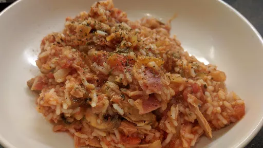

Tuna & tomato rice

Servings: 4
Total: 25 mins
Ingredients
- 225 g long grain rice
- 1 tbsp olive oil
- 2 cloves garlic, finely chopped
- 1 onion, finely chopped
- 2 rashers smoked streaky bacon, trimmed of fat, chopped
- 175 g chestnut mushrooms, sliced
- 2x 400 g cans chopped tomatoes
- 200 g can tuna in spring water, drained
- generous handful flat-leaf parsley leaves, finely chopped
Instructions
- Cook the
rice225 g
in salted boiling water for 10-12 minutes.
- Meanwhile, heat the
oil1 tbsp
in a pan and fry the garlic2 cloves
, onion1
and bacon2 rashers
for 5 minutes, stirring often. Add the mushrooms175 g
and cook for another 2-3 minutes. Stir in the tomatoes2x 400 g cans
and tuna200 g can
and season well. Heat through for 5 minutes.
- Drain the
rice225 g
, stir it until the tomato sauce with the parsleygenerous handful
, mixing gently, then divide among 4 bowls to serve.
-
kcal
346
-
fat
6 g
-
saturates
2 g
-
carbs
57 g
-
sugar
3 g
-
fibre
6 g
-
protein
19 g
-
salt
3.52 g
BBC Good Food: Low-fat Feasts
Short Link
Long Link